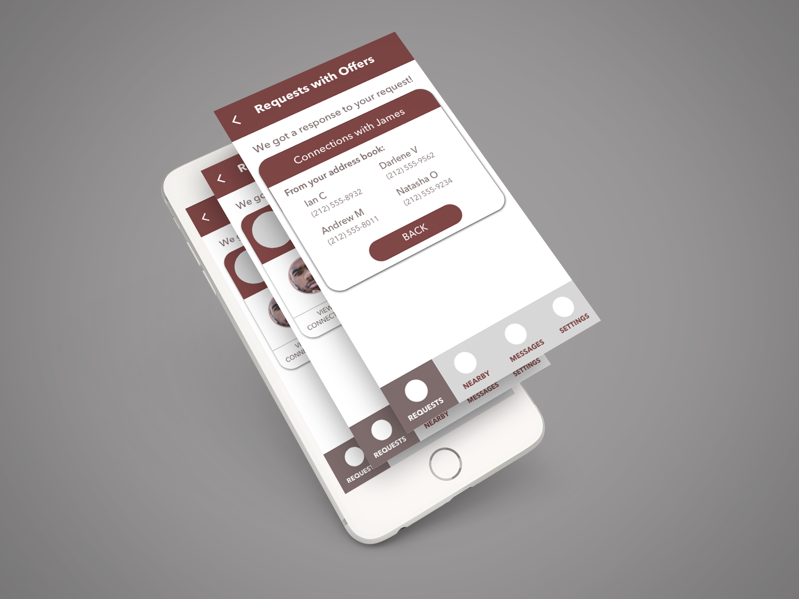
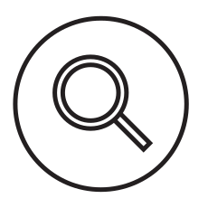
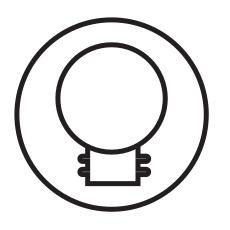
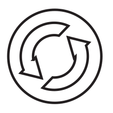

Project Overview
Neighbabel: Local Language Help
Interaction Design, Interactive Prototyping, User Testing

Problem Statement
In many of New York City’s residential neighborhoods, the residents are diverse in a number of ways. One such ways, which defines the essence of the city, is the diversity in languages spoken within an individual neighborhood. In many neighborhoods, it would be possible to walk through and hear a number of different languages, none of which are English. These differences in languages, while quintessential to New York City’s diversity as a whole, poses a unique challenge for a neighborhood’s local organizations and businesses whom lack of the time and/or resources to promote their services and events to a multitude of groups which speak many different languages. As such, language barriers limit the overall impact and reach that local organizations can have within a given New York City neighborhood.
Solution Overview
My prototype—Neighbabel, is a app that acts a person nearby service for diverse neighborhoods where language needs are common. It uses one of these neighborhoods’ greatest resources: it’s people. In particular, bilingual and multi-lingual people who can act as a bridge between parties which otherwise would have trouble communicating. The app’s strategy revolves around its three main features.

Methodology
Problem Statement
I first defined the problem that I was going to try to solve, and estimate how wide in scope my solution should be. Initially, I wanted to think about a solution to the increasing community engagement in New York City. As I learned more, I realized that the scope was far to broad so I narrowed the scope to focusing on langauge barriers in neighborhood engagement.

Research
Comparative Analysis: I looked several other products which offered features that may solve the problem.
User Interviews: I spent time interviewing 3 members of the target audience to better understand their needs, which I factored into when considering potential features for my solution.
Personas: Once I was done conducting Interviews, I created personas to describe the different stakeholders in my target audience, as well as an anti-persona to remind myself who I wasn't designing for.

Ideation
I spent time sketching 8 different potential solutions for the scoped problem. Afterwards, created a 5 panel workflow for each of the 8 solutions.

Rapid Prototyping
Low-Fi Prototype: Based on the interviews and personas that had, I chose one solution that had and fleshed it out into a pen and paper (low-fi) prototype. The prototype very rough had the interactions I had in mind.
User Testing: After the low-fi prototype was completed, I tested the prototype with 3 users to get feedback on which interaction worked, and which were flawed and lead users to get stuck.
Interactive Prototype & Iterate: Using the feedback I got while testing my intial paper prototype, I created my inital digital prototype. At this stage, smaller details such as shapes of buttons and colors were thought more carefully about. I continued to test the interactions of the prototype in each iteration until the deadline of the project.
Outcome
I presented about my work and process to the class which this project was for, and I plan on continuing to develop it as I find time to work on the next iterative prototype of the app.